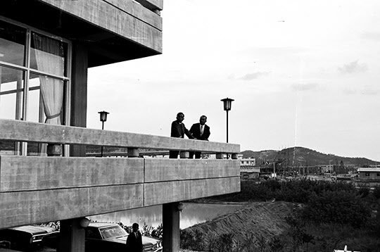
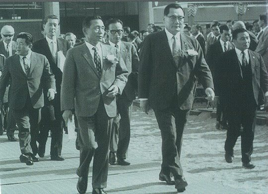

보도일 2014-08-14출처 조선일보 프리미엄조선 연재
4·19의 신선한 기풍이 군부에도 쇄신 바람을 일으켰다. 군부는 변해야 했다. 박정희는 박태준을 비롯한 핵심참모와 숙의하고 드디어 과감한 행동에 나선다. 그것은 1960년 5월 2일 송요찬 계엄사령관(육군참모총장)에게 편지를 보내는 방식으로 이뤄진다.
박태준이 “세월이 많이 흘러서 복기해 보았을 때는 태풍의 눈과 같은 역할을 했던 것”이라고 평가한 그 문제적 편지는 ‘4·19사태를 민주적으로 원만히 수습하신 각하의 공적이 절찬에 값하는 바임은 물론이오나 3·15부정선거에 대한 책임도 또한 결코 면할 수 없는 것이며 따라서 그 공과(功過)는 상쇄(相殺)가 불가능한 사실에 비추어 가급 조속히 진퇴를 영단(英斷)하심이 국민과 군의 진의에 영합하는 것’이라고 진언했다.
‘각별한 은혜를 입은 부하로서 각하를 길이 받들려는 미충(微忠)에서 감히 진언드리는 충고를 경청하시기를 복망(伏望)합니다’라는 예의도 갖추고 있었다.(이 편지의 전문은 조갑제의 『박정희』에 있음.)
박정희를 1군 참모장으로 발탁하고 부산군수기지 사령관으로 밀어준 송요찬은 이승만 하야 직후에 시민사회에서 거의 영웅 대접을 받는 중이었다. 시위대에 발포하지 않고 대통령 하야를 건의한 것이 그의 영웅적 공로로 칭송되고 있었다. 그러나 그가 과거의 부정선거에 깊이 연루된 것은 숨길 수 없는 사실이었다.
시대적 격랑의 한복판에 뛰어든다는 선언과도 같은 박정희의 그 편지가 인편으로 부산에서 서울로 출발한 날, 허정 과도정부 내각 수반이 이종찬 장군을 국방부 장관에 임명했다. 1952년 부산 정치파동 때 이승만 정권의 전복을 생각했고 한때는 많은 장교들에 의해 군사혁명의 지도자로 지목 받았던 이종찬. 그의 국방부 장관 취임을 박정희는 좋은 일이라고 했다. 박태준에게도 기쁜 일이었다. 이종찬이 육군대학 총장으로 재임한 당시의 수석 졸업자가 박태준이었고, 그때부터 그는 박태준에게 남다른 관심을 보내주고 있었다.

박정희의 그 편지에 급소를 찔린 송요찬은 분개했다. 박정희의 거사 낌새를 경계하는 장성들과 고위 장교들만 골라 그것을 회람시키고, 육본 장병들을 연병장에 집합시켜 ‘하극상’이라는 말까지 동원하며 박정희를 비난했다. 그러나 곧바로 육사 8기 김종필 중령 등이 연판장을 돌려 정군(整軍)운동을 개시했다. 박정희의 거사를 획책하는 김종필의 행동이 수면 위로 솟구친 것이기도 했다. 육군의 정군운동은 해병대, 공군, 해군으로 번져나갔다.
정군운동에 탄력이 붙는 가운데 부산 시내에 일본 조총련이 부산 시위에 개입한다는 유언비어가 퍼졌다. 조총련의 보이지 않는 손이 들어와 있다. 이것은 박정희의 전력을 공격하면서 그의 연루 의혹을 부풀리기에 아주 좋은 소재였다. 부산의 민주당 두 국회의원이 허정에게 박정희가 조총련 자금 10억 환을 받았다는 밀고까지 했다. 박정희를 알고 박태준을 믿는 이종찬은 그것을 믿으려 하지 않았다.
‘박정희의 전력’을 들쑤시는 책략으로 톡톡히 재미를 쌓은 송요찬이 박정희를 못 믿으니 부산에 추가파병을 해야 한다고 했다. 그러나 박정희는 이종찬에게 추가파병에 반대하는 의견을 올렸다. 결국 송요찬은 부산에 감찰만 파견했다.
최영희 중장과 서종철 소장이 부산으로 내려왔다. 최영희의 뜻에 따라 두 장군은 갈라졌다. 최영희가 단독으로 박정희를 만났다. 함께 근무한 적이 없는 사이였다. 그러나 박정희와 술잔을 기울인 그는 사흘 만에 박정희를 이해하고 두둔하는 사람으로 바뀐다.
키가 훌쩍 크고 덩치가 좋은 서종철 접대는 박태준이 맡았다. 박태준은 서종철을 직속상관으로 모신 적이 있었다. 25사단에서 사단장과 참모장이었던 것이다. 서종철은 박태준의 영접이 반가웠다. 사단장 시절에 톡톡히 신세를 졌던, 꼴찌 사단을 일등 사단으로 거듭나게 만든 ‘일등공신’이었던 후배와 오랜만에 만났으니 술이라도 한턱내고 싶은 심정이었다. 박태준은 서종철을 생선회 좋은 술집으로 모셔갔다.
“해병대다 뭐다, 여기 자꾸 이상한 사람들이 모인다는 정보가 올라와서 말이야. 박 대령, 정말 뭐 하는 거 아니야?”
“하긴 뭘 한단 말씀입니까? 송요찬 참모총장께서 우리 사령관의 서신 때문에 화가 나서 분풀이를 하시는 거지요.”
박정희의 오른팔 역할을 하며 ‘변혁의 인자’로 박혀 있는 박태준은 태연히 둘러댔다.
1960년 5월부터 7월까지 석 달 동안 부산 군수기지사령부를 들락거린 대표적 인물은 육군 김종필 중령과 해병대 김동하 장군이었다. 서종철은 박태준을 괴롭힐 마음이 아니었다. 두 사람의 ‘공식적 대화’는 그런 수준에서 더 나가지 않았다. 거구의 손님은 사람 좋게 물렁물렁했다.
최영희에 이어 송요찬이 직접 부산에 내려왔다. 그러나 그는 군수기지사령부 장병들 앞에서 박정희의 계엄업무에 대해 칭찬을 아끼지 않았다. 권력 상층부와 군부의 대세가 송요찬과 반대방향으로 기울고 있다는 증거였다. 이종찬도 부산을 시찰하러 내려왔다. 5월 9일에는 정부 대변인이 부산 시위에 공산세력이 개입했다는 일부 정치인들의 주장에 대해 ‘공식적’으로 부인했다.
박정희가 유언비어의 마술에서 ‘공식적’으로 풀려난 순간이었다. 그러나 6월에도 방첩대는 ‘박정희 장군을 중심으로 장교들이 심상치 않은 움직임을 보이고 있다’는 첩보를 올리고 있었다. 육군 수뇌부가 마냥 깔아뭉갤 수 없는 일이었다. 잡아 가두든가, 옷을 벗기든가, 쪼개 버리든가.
노년의 박태준은 송요찬과 박정희의 인연에 대해 이야기하는 가운데 언뜻 떠오른 무엇을 포착한 것처럼 ‘송요찬과 철강’에 대해 평가한 적이 있었다.

“송요찬 장군과 박정희 장군의 관계는 좋은 시절도 있었고 나쁜 시절도 있었소. 나중에는 박 대통령이 그분을 인천제철 사장으로 보내기도 했지. 그때가 언제였나…, 포철에 대한 대일청구권자금 전용 협약을 끝내고 내가 착공 준비에 여념이 없었던 때였으니, 69년 말이나 70년 초쯤이었을 거요. 군복을 벗은 송요찬 참모총장도 한때는 철강인이 되었던 거지.
당시 인천제철은 60만 톤짜리 전기로 제철소였는데, 그분에 대해 경영자로서 평판이 좋은 편이었소. 철강에는 문외한이라는 자기 한계를 스스로 인식하고 그걸 극복하기 위해 선진 제철소 견문도 열심히 다니고 국제적 추세도 파악해서 방향을 제대로 잡았던 모양이오. 업무의 선후도 잘 정리하고 추진력도 강하고 대외협상력도 남달랐다는 거요. 그런 평판은 나도 참 듣기에 좋았소.”
1960년 7월 하순, 박정희는 참모들과 출입기자들을 데리고 부산 송도해수욕장 근처의 음식점에서 회식을 열었다. 그날 회식 자리를 박태준은 팔순을 넘어서도 선명히 기억했다.
“그날 저녁이 부산 시절의 마지막 술자리였소. 부산에 오래 있지 못할 거라는 예상은 했지만, 그날이 끝인 줄 알았다면 기자들을 왜 불렀겠소? 그분의 술자리 장기가 유감없이 발휘됐지. 남인수의 <낙화유수> 있잖소? 나도 그분한테 배운 거나 마찬가진데, 이 강산 낙화유수 흐르는 봄에 새파란 젊은 꿈을 엮은 맹세야 세월은 흘러가고 청춘도 가고 한 많은 인생살이 꿈같이 갔네……. 이걸 군가처럼 불렀지. 우리는 군인이었으니.
그분은 항상 술자리를 편하게 해줬어. 참모들은 알아서 했고. 허어, 그날은 ‘안남춤’까지 추시더군. 방석을 머리 위에 올려 수건으로 싸매고 추는 춤인데……, 바로 그 자리에 육본 인사 발령이 도달했소. 광주로 가라. 그래서 그날 밤에 정말 대취를 하셨소. 우리가 그분을 업고 나왔으니까.”
술이 깨고 새날이 밝으면 광주로 떠날 준비를 해야 하는 박정희는 박태준에게 무슨 말을 할 것인가?